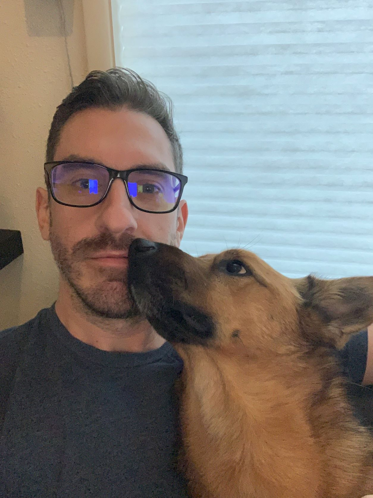

Greg Ramsower's Epicodus Portfolio
Welcome!
I'm a soon-to-be-former lawyer, budding software developer,
and current Epicodus Student.
About Me

After nearly ten years as an attorney, the COVID-19 pandemic provided an opportunity for personal reflection. I decided that I needed to make a change. I began exploring a variety of career opportunities. Coding quickly lept out as an early contender: I had basic experience in my past, and I have always had an enduring interest in technology.
In August 2022, I enrolled with Epicodus. This page demonstrates my html and css proficiency, and exhibits a portfolio of my work.
A Brief Resume
- 2019 - present, Junior Partner, The Law Office of Blake & Ramsower, LLC, Portland, OR
- 2013 - 2019, Associate Attorney, The Law Office of Larry J. Blake, Jr., LLC, Portland, OR
- 2009 - 2012, Juris Doctor, Notre Dame Law School, South Bend, IN
- 2008 - 2009, 5th/6th Social Studies Teacher, St. Ignatius' School/ Jesuit Volunteer Corp, Bronx, NY
- 2004 - 2008, BA, Marketing, University of Notre Dame, South Bend, IN
In my free time, I enjoy traveling, exploring the Pacific Northwest with my Husband (Nathan) and dog (Bear), gaming, and trying new restaurants.
My Portfolio
Please Note: Below a selection of some of my projects with Epicodus. Some of them are unfinished; most are very basic. As I move through the course, this list will be updated with the best examples of my work.
- My First Webpage, Again Again! (Although it's not technically my first webpage--that delightful bit of code has been lost in the detritus of Web1.0-- this page is the brand-spanking-est new webpage I've created since!)
- Branching Test Project(Look Ma, I can branch a project on github!)
- Interior Decorators Let's just say my strenghts lie...elsewhere...
- Pet Adoption(Unfortunately, none of these lil' rascals are actually adoptable.)